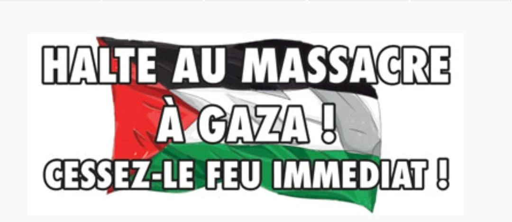

Appel relayé
À Niort, appel à se rassembler pour Gaza le 16 mars
Date indiquée par Facebook · 15 mars 2024
Repères éditoriaux
Nous avons relayé le rendez-vous de 11 h place des Halles fixé par le Collectif Palestine 79.
Texte conservé avec la publication
A l'appel du Collectif Palestine79
Rassemblement le samedi 16 mars à 11h, Place des Halles à Niort pour un cessez-le-feu immédiat et définitif à Gaza
Venez Nombreux!
Gaza vient d'entrer dans le 6ème mois d'une guerre totale qui a déjà fait plus de 30 000 morts (dont 70 % de femmes et d'enfants), et plus de 70 000 blessés, sans compter les dizaines de milliers de disparus. Les premiers cas de morts dus à la famine sont aujourd'hui avérés. Non seulement Israël n'a aucunement l'intention de relâcher sa pression militaire meurtrière, mais s'acharne à entraver toutes les tentatives d'aide humanitaire, et cela en toute impunité. Le Collectif Palestine 79 refuse de se résigner au pire et appelle une fois de plus la population à se rassembler pour crier son indignation.
Le Collectif est mobilisé depuis cinq mois et déclare qu'il le restera jusqu'à l'arrêt du génocide. Il maintient sa solidarité inébranlable avec le peuple palestinien.

Sources
Archive rouge · export Facebook · AR-0002-FB-01448
À lire aussi · À Niort, le rassemblement du 25 octobre pour la paix en vidéo · Le lien d’origine